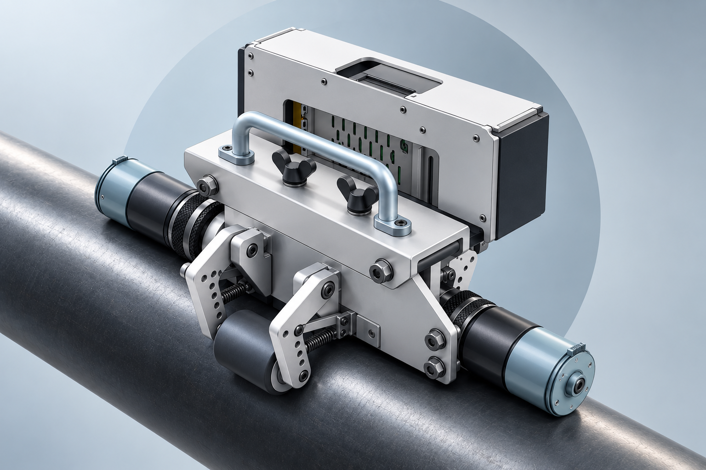
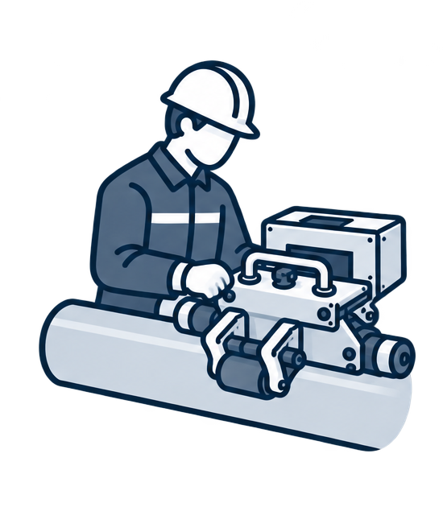
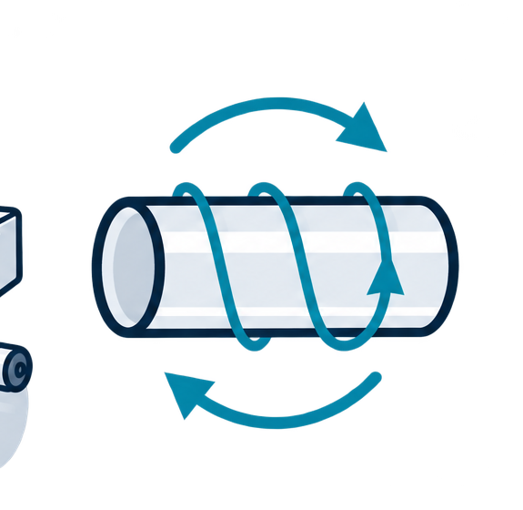
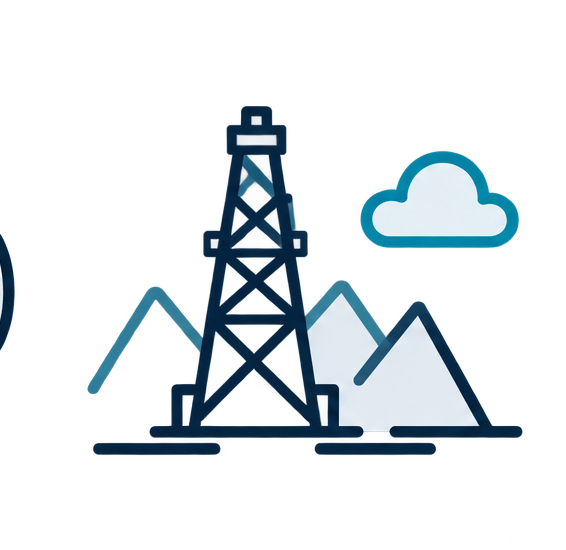

Автоматизированная диагностика труб
Мобильный робот
для контроля труб
Стадия: прототип
Разрабатываем автономного мобильного робота для наружного неразрушающего контроля стальных труб. Платформа удерживается на поверхности магнитными колёсами, движется по винтовой траектории и выполняет сканирование методом MFL.
Как работает робот- Трубы Ø60–168 мм
- Магнитная дефектоскопия MFL
- Винтовое сканирование
- Автономная работа
ООО «РОБОТЕХСКАН» · ПРОМЫШЛЕННАЯ РОБОТОТЕХНИКА

Задача
Наружный контроль
труб требует
автоматизации
Традиционный неразрушающий контроль труб во многих случаях требует непосредственного участия оператора или применения стационарного оборудования. Это снижает производительность диагностики и усложняет проведение контроля в полевых условиях. Проект направлен на автоматизацию наружного контроля труб с помощью мобильной роботизированной платформы.
-
01

Участие оператора
При ручном контроле специалист непосредственно перемещает диагностическое оборудование и контролирует процесс сканирования, что ограничивает производительность работ.
-
02

Сложность полного охвата
Для достоверной диагностики необходимо последовательно обследовать наружную поверхность трубы. При ручном контроле это требует повторяющихся перемещений и соблюдения траектории сканирования.
-
03

Полевые условия
Диагностика должна выполняться на трубных базах, ремонтных участках и объектах нефтегазовой отрасли, где применение крупногабаритных стационарных установок затруднено.